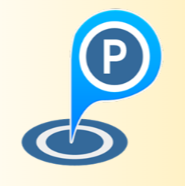

<nav class="navbar navbar-expand-lg navbar-dark gradient fixed-top" id="navegation">
  <a class="navbar-brand d-flex"  routerLink="/inicio">
    
    <h3 class="ml-3 mt-2">GOOD PARKING</h3>
  </a>
  <button class="navbar-toggler" type="button" data-toggle="collapse" data-target="#navbarNav" aria-controls="navbarNav"
    aria-expanded="false" aria-label="Toggle navigation">
    <span class="navbar-toggler-icon"></span>
  </button>
  <div class="collapse navbar-collapse" id="navbarNav">
    <ul class="navbar-nav ml-auto">
      <li class="nav-item mr-2" *ngIf="!loginService.isUserLoggedIn()">
        <a class="nav-item nav-link" routerLink="/login" routerLinkActive="active" href="#"><i
            class="fas fa-sign-out-alt"></i> Login</a>
      </li>
      <li class="nav-item mr-2" *ngIf="loginService.isUserLoggedIn() && showAdmin">
        <a class="nav-item nav-link" routerLink="/registrarparqueadero" routerLinkActive="active" href="#"><i class="fas fa-parking"></i> Registrar Parking</a>
      </li>
      <li class="nav-item mr-2" *ngIf="loginService.isUserLoggedIn() && showUser">
        <a class="nav-item nav-link" routerLink="/reserva" routerLinkActive="active" href="#"><i
            class="fas fa-calendar-check"></i> Reserve</a>
      </li>
      <li class="nav-item mr-2"*ngIf="loginService.isUserLoggedIn()">
        <button class="btn text-white" (click)="logOut()"><i class="fas fa-door-open"></i>Log out</button>
      </li>
      <li class="nav-item mr-2 dropdown" *ngIf="!loginService.isUserLoggedIn()">
        <a class="nav-item nav-link dropdown-toggle" href="#" id="navbarDropdownMenuLink" role="button"
          data-toggle="dropdown" aria-haspopup="true" aria-expanded="false"> Sign up</a>
        <div class="dropdown-menu dropdown-menu-lg-right" aria-labelledby="navbarDropdownMenuLink">
          <a class="dropdown-item" routerLink="/registrarse" routerLinkActive="active" href="#">Usuario</a>
          <a class="dropdown-item" routerLink="/registraradmin" routerLinkActive="active" href="#">Administrador</a>
        </div>
      </li>
    </ul>
  </div>
</nav>
<div style="height: auto; overflow-x: hidden;">
  <router-outlet></router-outlet>
</div>